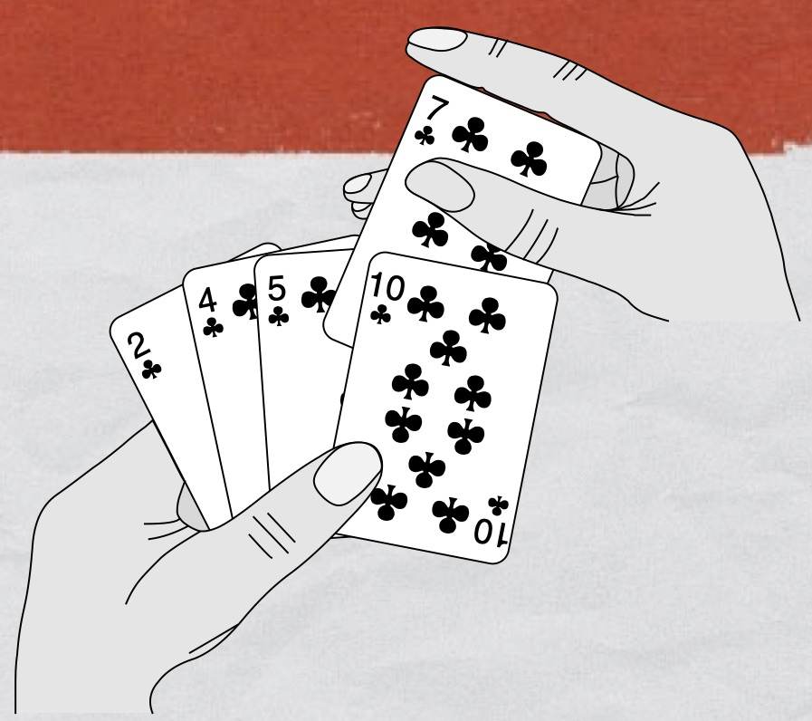

Objectifs
Le tri par insertion a été étudié en classe de 1ère. Dans ce document, après un rappel du cours de 1ère, nous allons implémenter une version récursive de cet algorithme et ensuite utiliser la possibilité que les fonctions en Python ont d’accepter des fonctions comme paramètres, afin de rendre plus générale et utile cette fonction de tri.
Tri du joueur de cartes
 Le tri par insertion est un tri « naturel » souvent qualifié de « tri du joueur de carte ». Comment un joueur de carte fait-il pour trier les cartes ?
- Au début, la main gauche du joueur est vide et ses cartes sont posées sur la table.
- Le joueur prend alors sur la table les cartes, une par une avec sa main droite, pour les placer dans sa main gauche.
- Pour savoir où placer une carte dans son jeu, le joueur la compare avec chacune des cartes déjà présentes dans sa main gauche, en examinant les cartes de la droite vers la gauche.
- À tout moment, les cartes tenues par la main gauche sont triées ; ces cartes étaient, à l’origine, les cartes situées au sommet de la pile sur la table.
Tri par insertion
Introduction
La méthode du tri par insertion est ilustré à ici , ou, de façon plus folklorique, ici .
- Visualiser la première vidéo (s’arrêter au bout de 4min40). Essayer de bien comprendre la méthode.
Algorithme itératif
Le tri par insertion est efficace lorsqu’on cherche à trier un tableau contenant un petit nombre d’élements ou un tableau dans lequel les éléments sont déjà pratiquement triés.
Idée
À chaque étape du processus, le tableau est divisé en deux sous-tableaux : le premier (indices plus petits que l’indice courant) est trié, le second (indices plus grands que l’indice courant n’est pas encore trié). On cherche la place de l’élément courant (non encore trié) dans le tableau trié.
Le tri par insertion est basé sur l'utilisation de deux boucles imbriquées :
- La première boucle, une boucle
Pour, parcourt la liste des valeurs, de la deuxième à la dernière ; - La seconde boucle, une boucle
TantQue, cherche à placer l’élément courant dans la première partie triée du tableau (indices inférieurs à l’indice courant).
Algorithme 1
Fonction tri_iter
Déclaration
Paramètre tab : tableau d’Entiers
Variables nb, i, j, clé : Entiers
Début
1.nb ⟵ len(tab)
2.Pour i variant de 1 à nb-1 Faire
3.clé ⟵ tab[i]
4.j ⟵ i - 1
5.TantQue j >= 0 et tab[j] > clé Faire
6.tab[j + 1] ⟵ tab[j]
7.j ⟵ j - 1
8.FinTantQue
9.tab[j + 1] ⟵ clé
10.FinPour
Fin
Remarque. L’algorithme du tri par insertion est un algorithme de tri en place. La réorganisation du tableau ne nécessite pas la création d’un nouveau tableau, ce qui économise de la place en mémoire.
-
Faire tourner « à la main » l’algorithme lorsque la fonction reçoit le tableau
tab = [5,2,4,6,1,3]. -
À quoi sert l’instruction, ligne 2 ?
-
Expliquer les conditions d’arrêt de la boucle
while, ligne 5. -
Implémenter la fonction en langage Python et la tester en l’appelant avec les arguments donnés à la question précédente.
Réponse
def tri(tab: List[int]) -> List[int]:
"""
Implémentation du tri par insertion.
Algorithme itératif.
"""
for i in range(1, len(tab)):
val = tab[i]
j = i - 1
while tab[j] > val and j >= 0:
tab[j + 1] = tab[j]
j = j - 1
tab[j + 1] = val
return tab
- Comment prouve-t-on, de façon générale, la terminaison d’un algorithme ?
Réponse
On définit un variant de boucle.
- Est-il nécessaire de prouver la terminaison de la boucle externe de cet algorithme ? De la boucle interne ?
Réponse
La boucle externe est une boucle Pour. Il n’est donc pas nécessaire de prouver sa terminaison. Par contre la boucle interne est une boucle TantQue. Il faut donc prouver sa terminaison.
- Démontrer la terminaison de cet algorithme.
Réponse
- Comment prouve-t-on, de façon générale, la correction d’un algorithme ?
Réponse
On recherche un invariant de boucle.
- Définir un invariant de boucle et prouver que l’algorithme est correct.
Réponse
Invariant de boucle.
La question à se poser est : « Qu’est ce qui est constant à chaque étape de cet algorithme ? »
Au début de chaque itération de la boucle Pour externe le tableau tab[0, ... , i-1] est un tableau trié constitué des i plus petits éléments du tableau tab, dans l’ordre croissant.
Rappels.
Nous devons montrer trois choses, concernant un invariant de boucle :
- Initialisation. Il est vrai avant la première itération de la boucle.
- Conservation. S’il est vrai avant une itération de la boucle, il le reste avant l’itération suivante.
- Terminaison. Une fois terminée la boucle, l’invariant fournit une propriété utile qui aide à montrer la validité de l’algorithme.
Si les deux premières propriétés sont vérifiées, alors l’invariant est vrai avant chaque itération de la boucle.
La troisième propriété est peut-être la plus importante : elle est utilisée pour prouver la validité de l’algorithme.
Démonstration de la correction de l’algorithme.
Initialisation. i=0, tab[0] est alors un tableau à un élément, trié de façon évidente.
Conservation. Par hypothèse, pour i compris entre 1 et nb-2, tab[0, ,i-1] est un tableau trié. Lors de l’itération i, on recherche le plus petit élément du tableau tab[i, ... ,nb-1] et on le place à la position d’indice i. À partir de l’hypothèse, cet élément est plus grand que n’importe quel élément du tableau tab[0, ,i-1] (sinon il appartiendrait déjà à ce tableau) ; le tableau tab[0, ... ,i] est donc trié.
Terminaison. Au début de la boucle dans laquelle i=nb-2, tab[0, ... ,nb-3] est un tableau trié. À l’issue de cette boucle, on a déterminé le plus petit élément entre tab[nb-2] et tab[nb-1] et on a placé correctement ces éléments ; le tableau tab[0, ... ,nb-1] est donc trié et l’algorithme est correct.
- Déterminer la complexité de l’algorithme.
Réponse
Rappels.
Au chapitre précédent, la notion de complexité a été introduite. Nous allons rappeller, dans cette partie, quelques règles simples qui permettent de se faire une idée de l’efficacité d’un algorithme.
- Une affectation ou l’évaluation d’une expression ont un temps d’exécution petit que l’on considère constant. Cette durée constitue souvent l’unité de base dans laquelle on mesure le temps d’exécution d’un algorithme.
- Le temps pris pour exécuter une séquence d’instructions
ppuisqest la somme des temps pris pour exécuter les instructionsppuisq. - Le temps pris pour exécuter un test
Si (b) Alors p Sinon q FinSiest inférieur ou égal au maximum des temps pris pour exécuter les instructionspetq, plus une unité qui correspond au temps d’évaluation de l’expressionb. - Le temps pris pour exécuter une boucle
Pour i variant de 1 à m par pas de 1 Faire p FinPourest m fois le temps pris pour exécuter l’instructionpsi ce temps ne dépend pas de la valeur de i.
En particulier, quand deux boucles sont imbriquées, le corps de la boucle interne est répété à cause de cette boucle, mais aussi parce qu’elle-même est répétée dans son intégralité. Ainsi, si les deux boucles sont répétées respectivement m et m' fois, alors le corps de la boucle interne est exécuté m * m' fois en tout.
Quand le temps d’exécution du corps de la boucle dépend de la valeur de l’indice i, le temps total d’exécution de la boucle est la somme des temps d’exécution du corps de la boucle pour chaque valeur de i. - Le cas des boucles
Tantqueest plus complexe puisque le nombre d’itérations n’est en général pas connu à priori.
On étudie seulement la complexité du pire et on se limite à l’influence des boucles. Si on note $N$ le nombre d’élements dans le tableau,
- pour $i=0$, la boucle interne effectue $N-1$ tours ;
- pour $i=1$, la boucle interne effectue $N-2$ tours ;
- pour $i=3$, la boucle interne effectue $N-3$ tours ;
- pour $i=N-3$, la boucle interne effectue 2 tours ;
- pour $i=N-2$, la boucle interne effectue 1 tour.
Finalement, il y a $1+2+\ldots+(N-2)+(N-1)=\sum_{k=1}^{N-1} k=\dfrac{(N-1)*N}{2}=\dfrac{N^2}{2}-\dfrac{N}{2}$. La complexité de l’algorithme est en $O(N^2)$.
Algorithme récursif
Algorithme 2
Fonction tri_rec
Déclaration
Paramètre tab : tableau d’Entiers
Paramètre i : Entier
Variable nb : Entier
Début
1.nb ⟵ len(tab)
2.Si i == nb Alors
3.Retourner tab
4.Sinon
5.insere(tab, i)
6.Retourner tri_rec(tab, i + 1)
7.FinSi
Fin
Algorithme 3
Fonction insere
Déclaration
Paramètre tab : tableau d’Entiers
Paramètre i : Entier
Variable temp : Entier
Début
1.Si i == 0 ou tab[i - 1] <= tab[i] Alors
2.Retourner tab[i]
3.Sinon
4.temp ⟵ tab[i - 1]
5.tab[i - 1] ⟵ tab[i]
6.tab[i] ⟵ temp
7.Retourner insere(tab, i - 1)
7.FinSi
Fin
-
Décrire le fonctionnement de l’algorithme récursif avec soin lorsque la fonction reçoit le tableau
tab = [5,2,4,6,1,3]. -
Implémenter en Python l’algorithme récursif.
Réponse
def tri_rec(tab: List[int], i: int = 1) -> List[int]:
"""
Implémentation du tri par insertion
"""
if i == len(tab):
return tab
else:
insere(tab, i)
return tri_rec(tab, i + 1)
def insere(tab: List[int], i: int) -> List[int]:
"""
Insère tab[i] dans le tableau tab[:i] déjà trié, récursivement.
"""
if i == 0 or tab[i - 1] <= tab[i]:
return tab[i]
else:
temp = tab[i - 1]
tab[i - 1] = tab[i]
tab[i] = temp
return insere(tab, i - 1)
Ajout d’une fonctionnalité au tri par insertion
Le tri par insertion, tel que nous l’avons implémenté, permet de trier des tableaux contenant tous les objets qui admettent < comme opérateur : int, float, str, … mais aussi tuple !!!
- Vérifier que la fonction
tri_recest bien capable de trier la liste[(7, 8), (3, 4), (1, 2), (5, 6)].
Quel est le critère de tri ?
Comment doit-on modifier nos fonctions de tri pour qu’elles trient par ordre décroissant ? Pour qu’elles trient le second élément de tuples passés comme arguments ?
Exemple de problème à traiter : Trier la liste suivante par année de naissance (ordre croissant)
eleves = [("Brian", 1, 1, 1942),
("Grace", 9, 12, 1906),
("Linus", 28, 12, 1969),
...]
Cette fonction auxiliaire doit être un prédicat.
- Modifier les fonction
tri-recetinserede façon à ce qu’elles admettent la fonctioninfcomme argument. La fonctioninfest responsable de la relation d’ordre lors du tri.
Réponse
def tri_g(inf: Callable, tab: List[int], i: int = 1) -> List[int]:
"""
Implémentation d'un algorithme générique de tri par insertion.
Algorithme récursif.
"""
if i == len(tab):
return tab
else:
insere_g(inf, tab, i)
return tri_g(inf, tab, i + 1)
def insere_g(inf: Callable, tab: List[int], i: int) -> List[int]:
"""
Insère tab[i] dans le tableau tab[:i] déjà trié, récursivement.
"""
if i == 0 or inf(tab[i], tab[i - 1]):
return tab[i]
else:
temp = tab[i - 1]
tab[i - 1] = tab[i]
tab[i] = temp
return insere_g(inf, tab, i - 1)
- Écrire une fonction
infqui permet de trier un tableau d’entiers par ordre croissant.
Réponse
def infe(x, y):
"""
Relation d'ordre générique.
Pas vraiment possible de donner les types.
"""
return y <= x
- Modifier la fonction
infde façon à ce que le tableau soit trié par ordre décroissant.